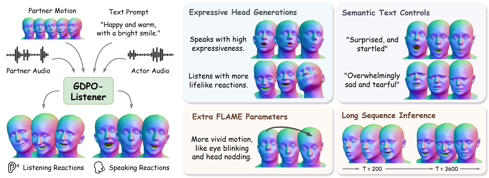
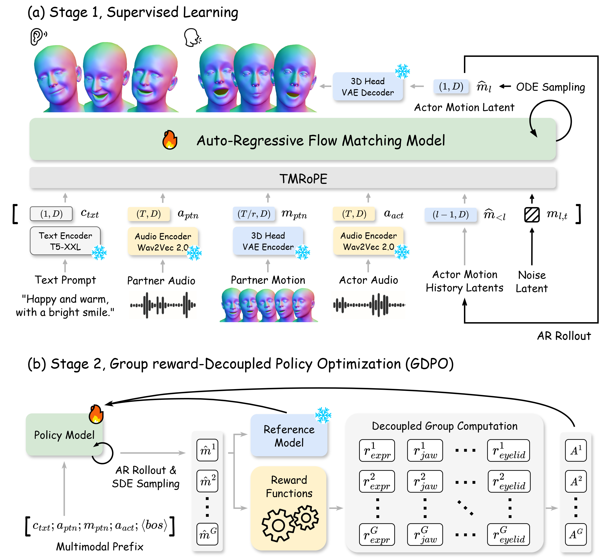

Supervised Learning
Multimodal inputs form prefix conditions, and an auto-regressive flow-matching model iteratively predicts actor-motion latents from noise and motion history through ODE sampling.
1University of Southern California, Institute for Creative Technologies
Generating realistic 3D head motion for dyadic interactions is a significant challenge in virtual human synthesis. While recent methods achieve impressive results with speaking heads, they frequently suffer from the “regression-to-the-mean” problem in listener motions, collapsing into static faces, and lack the parameter space for complex nonverbal motions.
We propose GDPO-Listener, a framework for highly expressive speaking and listening motion generation. First, an Auto-Regressive Flow Matching architecture enables stable supervised learning. Second, Group Reward-Decoupled Policy Optimization (GDPO) isolates reward normalization across distinct FLAME parameter groups, explicitly incentivizing high-variance expressive generations.
The framework also enables explicit semantic text control for customizable responses. Extensive evaluations on the Seamless Interaction and DualTalk datasets demonstrate improved long-term kinematic variance, visual expressivity, and semantic controllability over existing baselines.


Multimodal inputs form prefix conditions, and an auto-regressive flow-matching model iteratively predicts actor-motion latents from noise and motion history through ODE sampling.
The policy is post-trained with SDE sampling and decoupled rewards for distinct FLAME parameter groups, directly optimizing expressive motion without collapsing the reward signal across groups.
Each sample shows the same speaking moment across all five panels for direct comparison. (Click the video to enable audio.)
Sample 1 of 10
Each sample shows the same listening moment across all five panels for direct comparison. (Click the video to enable audio.)
Sample 1 of 10
Natural-language prompts guide GDPO-Listener toward distinct emotional responses while preserving the underlying conversational context.
Calm and contemplative, with a steady gaze directed downward.
Happy and warm, with eyes crinkling at the corners and a genuine smile.Actor
Sad and vulnerable, with downcast eyes and a bowed head.
Surprised and startled, with wide eyes and a fixed, open-mouthed stare.
Sample 1 of 2
The same conversational input is rendered at low and high expressiveness to show direct control over motion intensity.
Sample 1 of 2
GDPO-Listener sustains expressive, context-aware motion throughout a two-minute rollout, demonstrating stable long-horizon generation.
GDPO-Listener motion is transferred consistently across diverse Gaussian-avatar identities for both speaking and listening interactions.
Sample 1 of 4
Sample 1 of 3